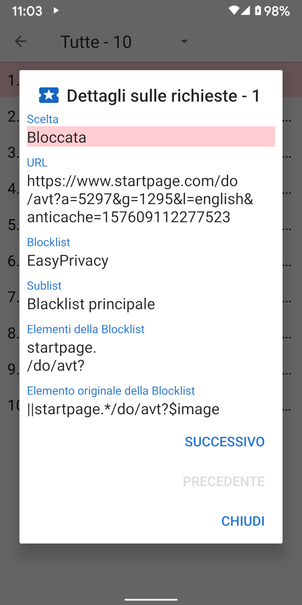

Quando viene caricata un URL, generalmente effettua un certo numero di richieste di risorse per CCS, JavaScript, immagini, e altri files. I dettagli relativi a queste richieste possono essere visualizzati nella scheda delle Richieste. Il menù a cassetto ha un collegamento alla scheda delle richieste e mostra quante sono state bloccate. Se si tocca una delle richieste in elenco vengono mostrati i dettagli sui motivi per cui è stata permessa o bloccata.
Privacy Browser è dotato di quattro liste di filtri comuni basati sulla sintassi Adblock: EasyList, EasyPrivacy, lista Fanboy’s Annoyance, e lista Fanboy’s Social Blocking. Queste liste di filtri sono processate da Privacy Browser nelle seguenti 22 sottoliste, che verificano le richieste di risorse nell'ordine sottostante.
Le liste iniziali servono per la verifica della parte iniziale delle URL. Le liste iniziali servono per la verifica della parte finale delle URL. Le liste dei domini servono per la verifica di certi domini. Le liste di terze parti si applicano solo se il dominio di root della richiesta è diverso dal dominio di root della URL principale. Le liste per le espressioni regolari seguono la sintassi delle espressioni regolari. Ogni oggetto delle liste secondarie ha uno o più elementi. Nel caso delle liste secondarie dei domini, la richiesta di risorse è verificata solo se il primo elemento combacia con il dominio della URL principale.
A causa delle limitazioni della WebView di Android, e per velocizzare il processo delle richieste, Privacy Browser implementa una interpretazione semplificata della sintassi di Adblock. Queso può a volte portare a falsi positivi, laddove le risorse sono permesse o bloccate in modalità che non sono quelle previste dalla voce originale. Una descrizione più dettagliata di come le liste dei filtri sono processate è disponibile su stoutner.com.
Privacy Browser liste di filtri aggiuntive.
UltraList e
UltraPrivacy
filtrano gli annunci e i tracker che EasyList e EasyPrivacy non filtrano. La terza blocca tutte le richieste di terze parti.
Una richiesta è considerata di terza parte solo se il dominio base della richiesta è diverso dal dominio base della URL.
Per esempio se www.website.com carica immagini da images.website.com,
questo non è bloccato come richiesta di terza parte perchè entrambi condividono lo stesso dominio base website.com.
Il blocco di tutte le richieste di terze parti aumenta la privacy, ma questa lista di filtri è per default disabilitata perché impedisce la visualizzazione di un elevato numero di siti web.